MySql to Snowflake
Now we know the basics, lets make something more useful.
For brevity the full connections YAML is included below for you to copy and replace your keys. However, we will be quite thorough to make sure each step is clear.
In this example, I need to take two tables ['clients', 'sales'] from our production MySql (replace with your favourite RDBMS) to Snowflake (replace with your favourite cloud DWH). Sample data for MySQL is included at the bottom.
We are going to load our data into a VARIANT field in Snowflake as this pattern is very fault tolerant.
Overview of what we want to do:
- List the tables from Typhoon variables.
- Extract each table from MySQL
- Write each table to S3 in JSON
- Creating a function to output to JSON
- Switching our connection to S3
- Copy the files into snowflake
DAG: list_tables→ extract_tables→ write_data_S3→ copy_to_snowflake_stage
We will learn how to sample and test the flows as we build. Here is the final expected output:
name: dwh_flow
schedule_interval: rate(1 hours)
granularity: hour
tasks:
list_tables:
function: typhoon.flow_control.branch
args:
branches:
- clients
- sales
extract_tables:
input: list_tables
function: typhoon.relational.execute_query
args:
hook: !Hook transaction_db
batch_size: 10
query_params:
interval_start: !Py $DAG_CONTEXT.interval_start
interval_end: !Py $DAG_CONTEXT.interval_end
metadata:
table_name: !Py $BATCH
query: !MultiStep
- !Py table_name=$BATCH
- !Py f"SELECT * FROM {table_name} where creation_timestamp between %(interval_start)s and %(interval_end)s"
write_data_S3:
input: extract_tables
function: typhoon.filesystem.write_data
args:
hook: !Py $HOOK.data_lake
data: !Py transformations.data.list_of_tuples_to_json(list($BATCH.batch), $BATCH.columns)
path: !Py f"data_{$BATCH.metadata['table_name']}_batch_num_" + str($BATCH_NUM) + "_" + str($DAG_CONTEXT.interval_end).replace(":", "_") + ".json"
metadata: !Py $BATCH.metadata
copy_to_snowflake_stage:
input: write_data_S3
function: typhoon.snowflake.copy_into
args:
hook: !Py $HOOK.snowflake
table: !Py $BATCH.metadata['table_name']
stage_name: stagetestcorpdatalake
s3_path: ''
Lets create a file in the /my_project_root/dags folder called dwh_flow.yml .
List_tables
name: dwh_flow
schedule_interval: rate(1 hours)
add granularity: hour
tasks:
list_tables:
function: typhoon.flow_control.branch
args:
branches:
- clients
- sales
echo_my_tables:
input: list_tables
function: typhoon.debug.echo
args:
mydata: !Py $BATCH
Life is simple when you only have two tables - if only!
Let's extract these hourly. We will improve this with variables later.
Let's run typhoon status, build it and run it:
typhoon dag build dwh_flow
typhoon dag run --dag-name dwh_flow
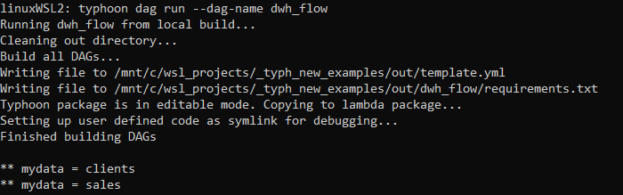
You can see we are simply outputting the tables in the list.
Extracting from MySQL
extract_tables:
input: list_tables
function: typhoon.relational.execute_query
args:
hook: !Py $HOOK.transaction_db
batch_size: 10
metadata:
table_name: !Py $BATCH
query: !Py "SELECT * FROM {table_name}".format(table_name=$BATCH)
Ok, here there are a few things going on:
- We are applying
relational.execute_queryon each table to query on our$HOOK.transaction_dbconnection. This is pointing to our MySQL database that records our customer transactions. - We are saving the table names for use downstream in the flow in our
metadatadictionary. - We are formatting our
queryusing normal python. Again, later in this tutorial we will use Variables to store our dynamic SQL.
Ok, so we will output the whole table each hour. Perhaps not so smart, so lets add something more reasonable.
extract_tables:
input: list_tables
function: typhoon.relational.execute_query
args:
hook: !Hook echodb
batch_size: 10
query_params:
interval_start: !Py $DAG_CONTEXT.interval_start
interval_end: !Py $DAG_CONTEXT.interval_end
metadata:
table_name: !Py $BATCH
query: !MultiStep
- !Py table_name=$BATCH
- !Py f"SELECT * FROM {table_name} where creation_timestamp between %(interval_start)s and %(interval_end)s"
Here we are making two changes. The obvious one is to apply the $DAG_CONTEXT.interval_start and $DAG_CONTEXT.interval_end as query parameters in the query (note its MySQL paramstyle). This means we will pull those transactions created within the hour interval. Much more sensible!
Note: you could of course treat this like the table as a string format (but not the other way around; you cannot use query parameters for the table or schema).
The second thing is we are temporarily using a new hook: echodb. This is similar to our echo task but will show us the sql that would be passed to MySQL. We need to add the connection (make sure its in the connection.yml which is available to copy at the bottom).
typhoon connection add --conn-id echodb --conn-env local
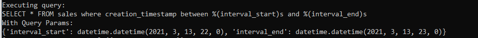
Looks correct SQL.
Remember to change your hook back to
hook: !Py $HOOK.transaction_db
Lets add our Mysql hook and run to an echo task:
typhoon connection add --conn-id transaction_db --conn-env prod
Because we are developing we might want to select a specific execution date:
typhoon dag build dwh_flow
typhoon status
typhoon dag run --dag-name dwh_flow --execution-date 2021-05-20T14:00:00
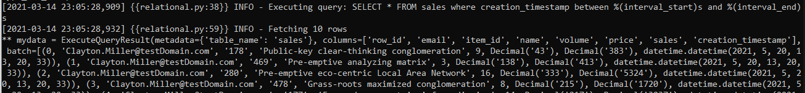
Our (faked) data from the MySql echoed
Do so now its outputting our selected tables within the time interval in batches of 10 rows (of course you would raise this). Next lets land this in files to S3.
Write each table to S3 in JSON
write_data_S3:
input: extract_tables
function: typhoon.filesystem.write_data
args:
hook: !Py $HOOK.data_lake
data: !Py $BATCH.batch
path: !Py f"data_{$BATCH.metadata['table_name']}_batch_num_" + str($BATCH_NUM) + "_" + str($DAG_CONTEXT.ts).replace(":", "_") + ".json"
metadata: !Py $BATCH.metadata
Ok, now its starting to look familiar (I hope).
Our function filesystem.write_data will write to a filesystem. Notice this is the same connection YAML used in hello_world. All our functions, connections and components are re-usable. Lets start with the local environment to test it to a local filepath.
typhoon connection add --conn-id data_lake --conn-env **local**
Running this we should now see the following (see the connection for where this will land):
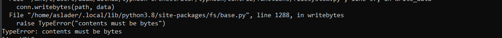
So we must transform the data to bytes. In fact we need to write it into JSON so that we can use Snowflake's VARIANT column for ingestion. We strongly recommend this pattern. We are passing this function data from the extract_tables task above. MySQL outputs some tuples so we need a transformation function that will turn these tuples into JSON (1 JSON object per row).
(Optional) reating a function to output to JSON
Info
This step is optional as it already is included in typhoon. So its only to illustrate how to roll your own function.
So, let's make our own function for this. In the transformations folder we can add function to the data file (or you can make a new one):
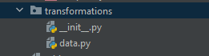
Typhoon is easily extensible.
from io import StringIO, BytesIO
from typing import Union
import simplejson as json
def list_of_tuples_to_json(data: Union[list], field_names: list):
list_of_dicts = [dict(zip(field_names, tup)) for tup in data]
d_out = BytesIO()
for d in list_of_dicts:
d_out.write(json.dumps(d, cls=TestEncoder, namedtuple_as_object=True).encode())
d_out.seek(0)
return d_out
Then we can call this in the DAG by replacing data with:
data: !Py transformations.data.list_of_tuples_to_json(list($BATCH.batch), $BATCH.columns)
So now, before we write to the file we are transforming our tuples to return rows of json doc as bytes.
Building and running the DAG now gives us:
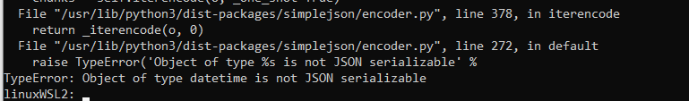
So lets see how we can debug the Python code directly. One key advantage of developing in Typhoon is that the YAML compiles to very readable, normal python functions. You can debug in an IDE of your choice as normal or run from prompt.
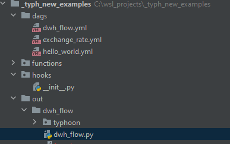
Building a DAG compiles to the 'out' folder
Note that we can set the example task to debug with in dwh_flow.py. For example here we are setting a test execution date. by altering the example_event datetime.
if __name__ == '__main__':
import os
**example_event = {
'time': '2021-05-20T14:00:00Z'
}**
example_event_task = {
'type': 'task',
'dag_name': '',
'task_name': 'list_tables_branches',
'trigger': 'dag',
'attempt': 1,
'args': [],
'kwargs': {
'dag_context': DagContext.from_cron_and_event_time(
schedule_interval='rate(1 hours)',
event_time=example_event['time'],
granularity='hour',
).dict()
},
}
dwh_flow_main(example_event, None)
We can find the point in the code that is relevant for our JSON
config['data'] = transformations.data.list_of_tuples_to_json(list(batch.batch), batch.columns)
So you can develop your function to correctly encode the datetime:
from io import StringIO, BytesIO
from typing import Union
import pandas as pd
import simplejson as json
from datetime import datetime
class DateTimeEncoder(json.JSONEncoder):
def default(self, obj):
if hasattr(obj, 'isoformat'):
return obj.isoformat()
else:
return json.JSONEncoder.default(self, obj)
def list_of_tuples_to_json(data: Union[list], field_names: list):
list_of_dicts = [dict(zip(field_names, tup)) for tup in data]
d_out = BytesIO()
for d in list_of_dicts:
d_out.write(json.dumps(d, cls=DateTimeEncoder, namedtuple_as_object=True).encode())
d_out.write(str('\n').encode())
d_out.seek(0)
return d_out
Then we should add this to our YAML:
data: !Py transformations.data.list_of_tuples_to_json(list($BATCH.batch), $BATCH.columns)
This is passing $BATCH.batch and the $BATCH.columns to this function that we will add. It is very simply transforming tuples from the resultset to JSON using our new function above.
Now if we run it again, either in the cli or the dwh_flow.py directly we should get an output to our local filesystem like:
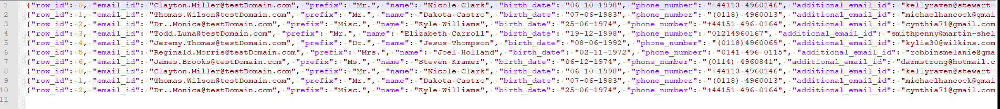
Our (fake) data exported as JSON in batches of 10 rows
Switching to S3
The final step of this section is to switch the connection to our S3 bucket (i.e. production):
typhoon connection add --conn-id data_lake --conn-env **prod**
When we re-run the DAG we will see the results are now landing in S3 (see YAML connections at end of this for hints on getting the connection right).
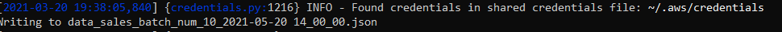
And in the bucket :
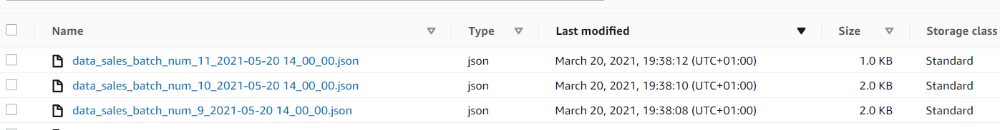
Copy data to Snowflake
Ok, now for the final step - we need to upload these files to snowflake. To prepare snowflake to receive from S3 you need to set up an S3 Stage ( See Snowflake docs).
Let's add our final task to the DAG YAML:
copy_to_snowflake_stage:
input: write_data_S3
function: typhoon.snowflake.copy_into
args:
hook: !Py $HOOK.snowflake
table: !Py $BATCH.metadata['table_name']
stage_name: stagetestcorpdatalake
s3_path: ''
Before we run it we need to create our staging tables. We are using a VARIANT loading field to land the data:
CREATE OR REPLACE TABLE clients (
data_var variant,
etl_id varchar(100),
etl_timestamp datetime,
etl_filename varchar(100)
)
;
CREATE OR REPLACE TABLE sales (
data_var variant,
etl_id varchar(100),
etl_timestamp datetime,
etl_filename varchar(100)
)
;
We need to add our connection (see YAML at the end for the connection):
typhoon connection add --conn-id snowflake --conn-env prod
Now we can build our flow for the final time and run it
typhoon dag build dwh_flow
typhoon dag run --dag-name dwh_flow --execution-date 2021-05-20T14:00:00
... and we have data in Snowflake!
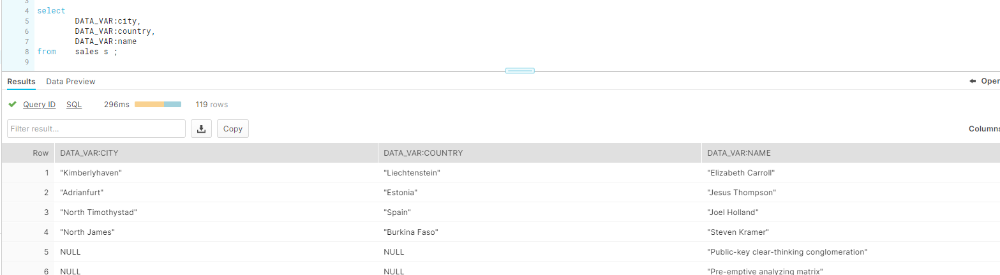
Some potential optimisations
- We are running COPY for each file we land. This isn't optimal, even though snowflake is protecting against duplicating the data. We can tackle this chaining together DAGS by writing a 'success file' .
- Listing tables in a variable
- More templating
- Creating a Component!
We will cover these in other blogs. For now...well done you made it!

Helper Assets
YAML connections
echo:
local:
conn_type: echo
echodb:
local:
conn_type: echodb
schema: main
data_lake:
prod:
conn_type: s3
extra:
base_path: /
bucket: your-bucket-here
region_name: your-region-here
login: SECRETLOGIN
passowrd: SECRETKEY
local:
conn_type: local_storage
extra:
base_path: /tmp/data_lake
transaction_db:
dev:
conn_type: sqlite
schema: main
extra:
database: /tmp/web_trans_local.db
prod:
conn_type: sqlalchemy
login: your-login-name
password: your-password
host: localhost
port: 3306
schema: prod_web_ecom
extra:
dialect: mysql
driver: mysqldb
database: prod_web_ecom
snowflake:
prod:
conn_type: snowflake
login: your-login
password: your-password
schema: staging
extra:
account: your-account
region: your-region
database: your-db
warehouse: WAREHOUSE_NAME
role: your-role